Welcome to Tim's index page for his SI 539 Common Class Project, your go-to destination for all things pets, recipes, travel, and LEGO Star Wars! Explore a world of captivating content where we cater to your love for furry companions, culinary delights, globetrotting adventures, and the bricks of your childhood (and adulthood).
Please note that despite my best efforts, I could not get aXe to not give serious issues with the YouTube videos. aXe is specifically angry at the channel icons, but nothing online seems to be able to help or explain where I can give alt-text for the channel icons(I assume that's why aXe is yelling). I believe it is a CSS issue well beyond the scope of this assignment. They have become images that link you to the video upon clicking instead. The old code remains as a comment. YouTube's embed copyable code also seems outdated as per w3's validator and not up to date with what little I could gain about what WCAG wants. The Image and Photo Gallery's order is: Image, Video, Image, Video.
Clone Turbo Tank
- Name: Clone Turbo Tank (with Light-Up Mace Windu)
- Release Year: 2005
- Set Number: 7261-1(2)
- Number of Parts: 771
- Number of Minifigures: 8
- Release Price: $90
- Current Value: $760
I originally did not have this set as a kid. I can clearly remmeber seeing it on display at Toysrus before I really got into STAR WARS. Once I got into Star Wars, this became the set on the front of my mind for two reasons: the Kaskyyyk trooper and the Turbo Tank itself.
I received the set new in-box for my High School graduation for the cool price of $300. It was worth it. It certainly is nowhere near the build quality of newer sets, but I prefer when LEGO sets feel more like toys instead of display items.
Image and Video Gallery
I remember when sets came with secondary builds! I also remember no bag numbers!
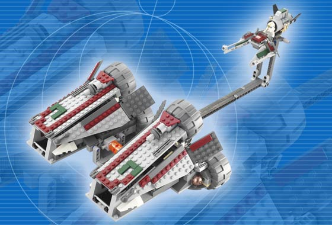There are several things that annoy me about this commerical now, but it is still cool!
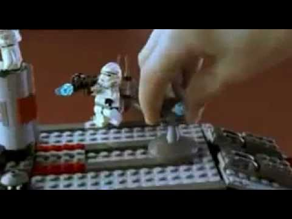THE minifigure I always wanted.
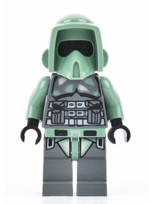A helpful comparsion to see the evolution of the set.
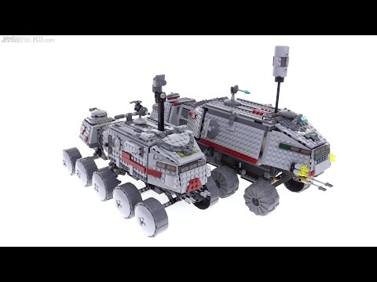Republic Attack Gunship
- Name: Republic Attack Gunship
- Release Year: 2008
- Set Number: 7676
- Number of Parts: 1004
- Number of Minifigures: 7
- Release Price: $120
- Current Value: $730
This was my first large set. It launched along with a new Star Wars TV show: The Clone Wars. Which if you haven't watched, you should... just so Episode III can go from wtf this is so sad to screaming and crying at the screen watching the clones commit Order 66.
This is my most customized set ever. It became so customized that it broke several times because who needs structural integrity. This was also one of the few sets I held onto after selling my collection. Selling my collection is up there as one of the worst mistakes of my life.
Image and Video Gallery
Rebuilding the set for the first time in years!
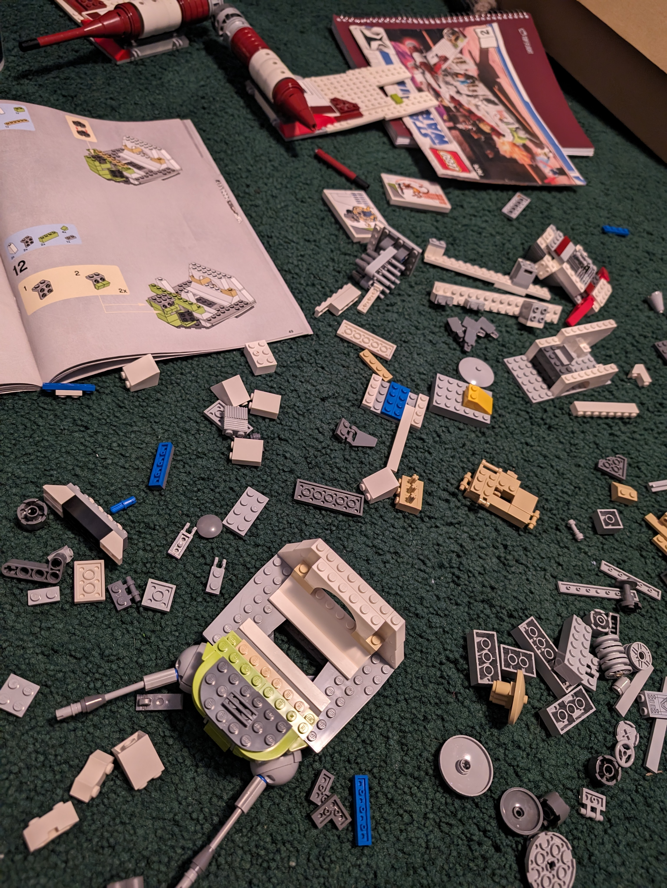Like the other commerical, I can see issues, but there's so much to like.
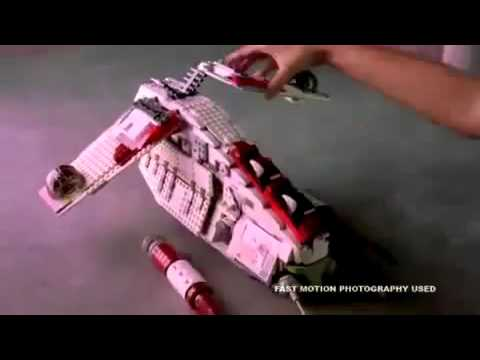During the first wave of Clone Wars sets, these guys were hard to come by. I had five because I had all five sets they came in. Next year, they released a battlepack and they became very common.
A helpful comparsion to see the evolution of the set.
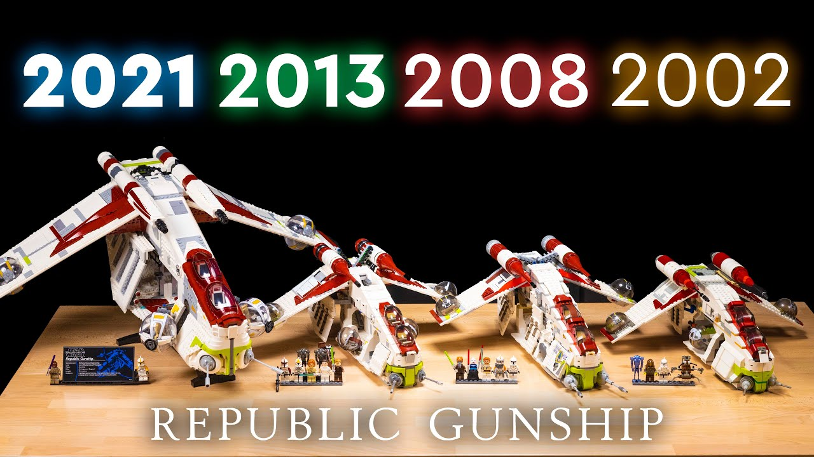Imperial Armored Marauder
- Name: Imperial Armored Marauder
- Release Year: 2021
- Set Number: 75311
- Number of Parts: 456
- Number of Minifigures: 4
- Release Price: $40
- Current Value: $42
Now you're probably thinking, this set? Really? As number three. While I can understand that thought process, I think this set stands out among newer LEGO sets for its value, price to part ratio, and the amount of things that can be moved, opened, closed, hitched, etc.
I would normally expect this set to go for anywhere between $45 and $55 in modern LEGO pricing schemes, but it's at a nice $40 and was rarely at that price; It could easily have been had for $32. It also has a very good price to part ratio of $0.08 per part. This ratio is not that useful anymore because of how complex and big pieces have become, but it stands out. The set feels like an excellent toy because there are so many things that can be interacted with. It isn't just a tank you have to make pew-pew noises for; you can load cargo; you can "explode" parts of the set. You can shoot the guns; you can move the AA gun; and you can load minifigures.
Image and Video Gallery
Walmart sent me three of these when I ordered one. The set also did not sell that well.
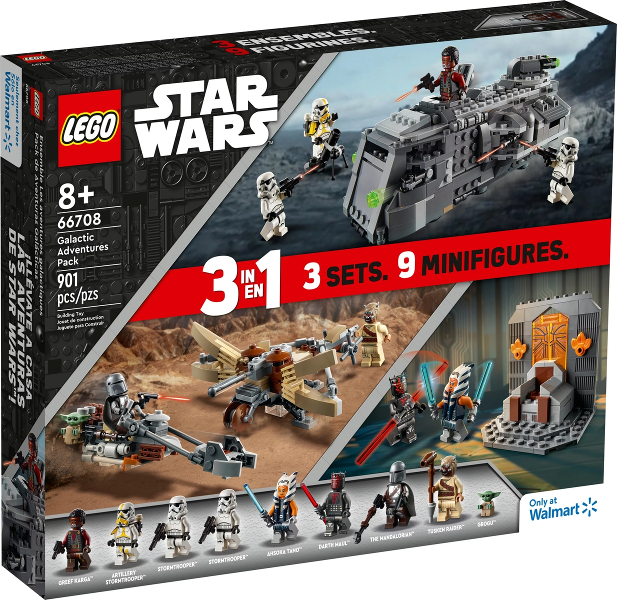A comparsion between a MOC verison of the set and another iteration of the set.
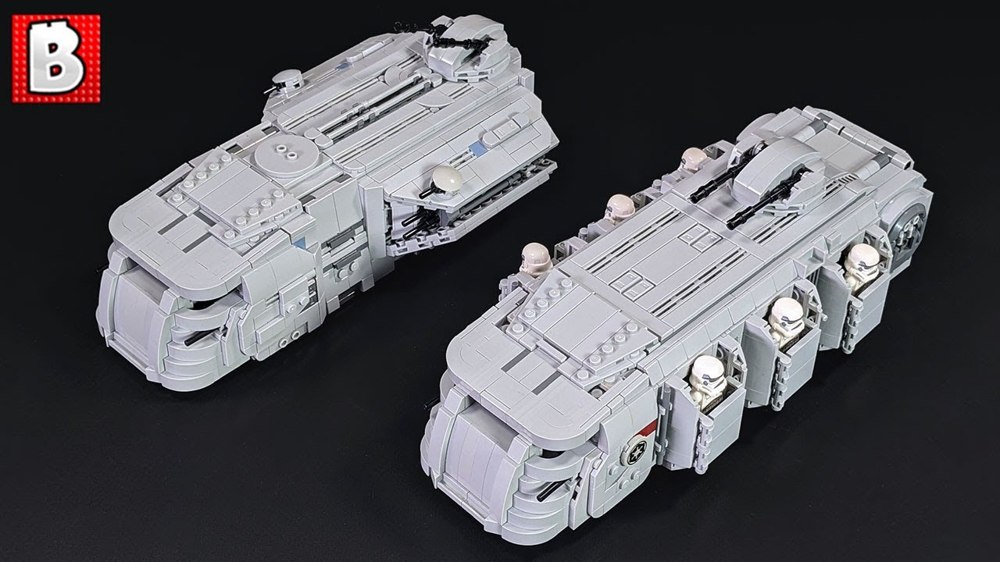LOOK AT ALL OF THE STUFF THAT OPENS AND CLOSES. IT IS PERFECT FOR A KID'S IMAGINATION
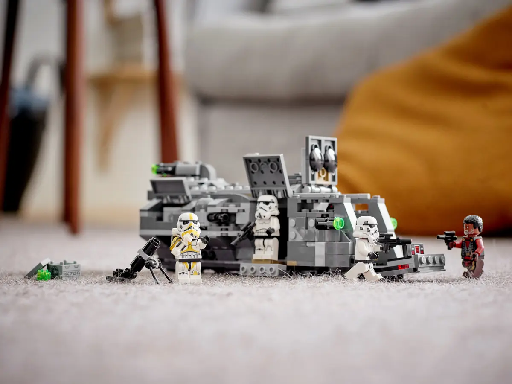A good review of the set from one of my preferred reviewers.
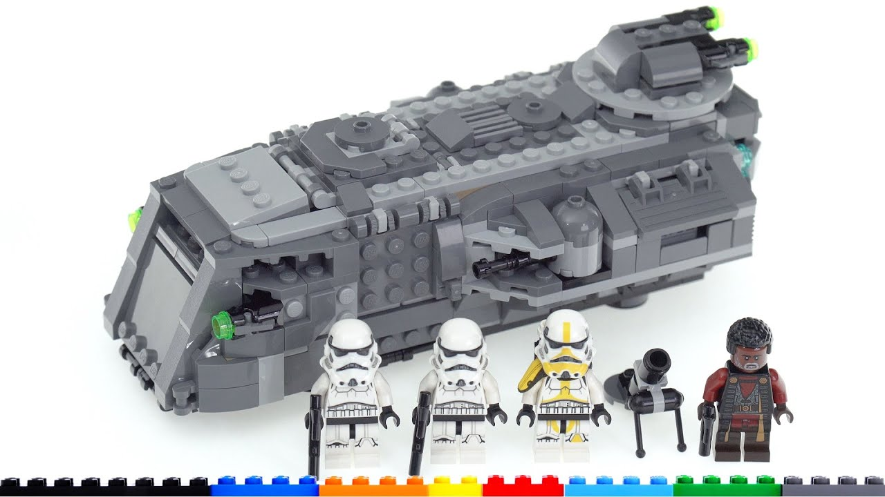